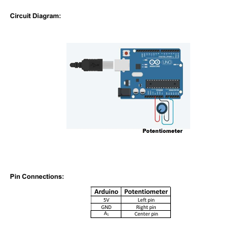

To study the working of Humidity sensors using Arduino.
TinkerCAD (Free online simulator)
Arduino UNO
Potentiometer (wiper)
Potentiometer as a Sensor:
A potentiometer, often referred to as a "pot," is a variable resistor with three terminals.
It consists of a resistive track and a wiper that moves along the track. By adjusting the wiper's position, you can vary the resistance.
In this demonstration, the potentiometer is used to simulate a variable sensor input.
Arduino:
Arduino is a versatile microcontroller platform commonly used for various electronic projects.
It can read analog voltage levels from sensors, including potentiometers, and convert them into digital values for processing.
TinkerCAD:
TinkerCAD is a web-based platform for simulating and designing electronic circuits and Arduino-based projects.
It is an excellent tool for testing and prototyping virtually, even when physical components are unavailable.
Demo Overview:
In this demo, we learn how to connect a potentiometer to an Arduino board in the TinkerCAD environment.
We understand the wiring and connections required to read variable resistance values from the potentiometer accurately.
Programming:
We see how to write the code to read and convert the analog voltage from the potentiometer into digital values and display the humidity.
Practical Applications:
While the potentiometer does not directly measure humidity, we observe how variable sensor inputs are used in applications like volume control, dimmer switches, and other scenarios where adjustable values are required.
The demo provides hands-on experience in interfacing a potentiometer with an Arduino, which can be valuable for various electronic projects.
Understanding how to read analog values and convert them into digital format is a fundamental aspect of working with sensors and input devices. This demonstration provides insight into the practical applications of potentiometers in real-world scenarios and interfacing variable sensors with Arduino.
/*
This code records the humidity using a simulated
potentiometer.
The Humidity is simulated by mapping the potentiometer
output into percentages.
*/
const int analogIn = A1; // Connect the humidity sensor to this pin
int humiditySensorOutput = 0;
void setup() {
Serial.begin(9600);
}
void loop() {
humiditySensorOutput = analogRead(analogIn);
int humidityPercentage = map(humiditySensorOutput, 0, 1023, 10, 70);
Serial.print("Humidity: "); // Printing out Humidity Percentage
Serial.print(humidityPercentage);
Serial.println("%");
delay(5000); // Iterate every 5 seconds
}
